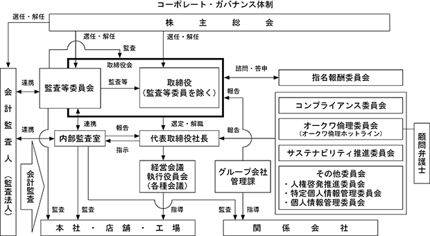

ストックオプション制度の内容は「第５経理の状況 １ 連結財務諸表等 (1) 連結財務諸表 注記事項（ストック・オプション等関係）」に記載しております。
該当事項はありません。
③ 【その他の新株予約権等の状況】
該当事項はありません。
該当事項はありません。
(注) 発行済株式総数の減少は、利益による自己株式消却によるものであります。
2024年２月20日現在
(注) 自己株式1,345,231株は、「個人その他」に13,452単元、「単元未満株式の状況」に31株含まれております。
なお、自己株式1,345,231株は、実質的な所有株式数と同数であります。
2024年２月20日現在
（注）１ オークワ共栄会は、当社の取引先を会員とする持株会であります。
２ 所有株式数は、表示単位未満の端数を切り捨てて表示しております。
３ 発行済株式(自己株式を除く。)の総数に対する所有株式数の割合は、小数点以下３位を切り捨てて表示しております。
2024年２月20日現在
(注) 「単元未満株式」欄の普通株式には、当社所有の自己株式31株が含まれております。
2024年２月20日現在
該当事項はありません。
(注)１ 当期間における取得自己株式には、2024年５月１日から有価証券報告書提出日までの自己株式取得による株式は含めておりません。
２ 取得自己株式は受渡日基準で記載しております。
(注) 当期間における取得自己株式には、2024年５月１日から有価証券報告書提出日までの単元未満株式の買取りによる株式数は含めておりません。
(注) 当期間における保有自己株式には、2024年５月１日から有価証券報告書提出日までの単元未満株式の買取り、新株予約権の権利行使による株式数は含めておりません。
当社の利益配分につきましては収益力の向上に努め、その成果及び今後の経営環境や業績動向等を総合的に勘案して、安定した配当を継続することを基本方針といたしております。
毎事業年度における配当の回数は中間配当と期末配当の年２回を基本としており、期末配当については株主総会が、中間配当については取締役会が決定機関であります。
内部留保資金につきましては、今後の新規出店をはじめとする経営基盤の拡充や財務体質の強化などに充当する所存であります。
当期末における配当金につきましては、継続的な安定配当の基本方針のもと、１株当たり13円の普通配当を実施することを決定いたしました。中間配当金を加えました通期の配当金は、１株当たり26円となります。
当社は、会社法第454条第５項に規定する中間配当を行うことができる旨を定款で定めております。
なお、当事業年度の剰余金の配当は、以下のとおりであります。
① コーポレート・ガバナンスに関する基本的な考え方
当社グループのコーポレート・ガバナンスに関する基本的な考え方は、経営環境の変化に迅速に対応できる組織体制を構築し、上場企業として公正かつ透明性をもって経営を行うことをコーポレート・ガバナンスの基本的な方針としております。
なお、当社は、2022年５月12日開催の第53期定時株主総会において、監査役会設置会社から監査等委員会設置会社へ移行しております。
監査等委員会設置会社として、取締役、監査等委員の連携のもと経営チェック機能を充実し、経営の健全性、透明性、効率性、迅速性を意識して、当社の持続的な成長と中長期的な企業価値向上を図ることをコーポレート・ガバナンスの基本的な考え方としております。
② 企業統治の体制の概要及び当該体制を採用する理由
イ 企業統治の体制の概要
当社は監査等委員会設置会社であり、会社の機関としては、会社法に規定する株主総会、取締役会、監査等委員会及び会計監査人を設置しております。なお、以下のコーポレート・ガバナンスの状況については、有価証券報告書の提出日現在の内容で記載しております。
a 取締役会
・取締役会は、12名（うち監査等委員である取締役４名）により構成され、経営及び業務執行にかかる最高意思決定機関として、毎月１回の定例及び臨時の取締役会に加えて、取締役間で随時打ち合わせを行い効率的な業務執行及び取締役間相互の業務執行監視を行っております。
・議長及び構成員は、以下のとおりであります。
議 長：大桑 弘嗣（代表取締役）
構成員：武田 庸司（取締役専務執行役員）、東川 浩三（取締役常務執行役員）、大桑 堉嗣（取締役）、大桑 祥嗣（取締役）、大桑 啓嗣（取締役）、大桑 俊男（取締役）、木田 理恵（社外取締役）、池﨑 好彦（取締役常勤監査等委員）、岡本 一郎（社外取締役監査等委員）、栗生 建次（社外取締役監査等委員）、八島 妙子（社外取締役監査等委員）
b 監査等委員会
・監査等委員会は、監査等委員である取締役４名（うち社外取締役３名）により構成され、幅広い視野及び客観的な立場から経営や業務執行の監督・牽制を果たすべく監査等に関する重要な事項について報告を受け、協議を行い又は決議しております。
・議長及び構成員は、以下のとおりであります。
議 長：池﨑 好彦（取締役常勤監査等委員）
構成員：岡本 一郎（社外取締役監査等委員）、栗生 建次（社外取締役監査等委員）、八島 妙子（社外取締役監査等委員）
c 指名報酬委員会
・指名報酬委員会は、取締役と執行役員候補者の指名及び取締役と執行役員個々の報酬等について審議を行い、審議の内容を取締役会に答申いたします。
・議長及び構成員は、以下のとおりであります。
議 長：大桑 弘嗣（代表取締役）
構成員：東川 浩三（取締役常務執行役員）、木田 理恵（社外取締役）、岡本 一郎（社外取締役監査等委員）、栗生 建次（社外取締役監査等委員）
d 経営会議
・経営会議は、代表取締役を含めた業務執行取締役と常勤監査等委員、執行役員及び議長が指名する担当部室長により構成され、毎週１回開催し、週ごとの販売実績や計画状況の確認と業務全般に関する取り組み事項等、経営方針に基づいて主要事項を審議決定しております。
・議長及び構成員は、以下のとおりであります。
議 長：大桑 弘嗣（代表取締役）
構成員：武田 庸司（取締役専務執行役員）、東川 浩三（取締役常務執行役員）、池﨑 好彦（取締役常勤監査等委員）、小西 淳（上席執行役員）、大桑 壮勝（上席執行役員）、郡司 雅夫（執行役員）、吹田 和彦（執行役員）、飯田 昇（執行役員）、静川 正宏（執行役員）
e 執行役員会
・執行役員会は、代表取締役を含めた業務執行取締役と常勤監査等委員、執行役員及び議長が指名する担当部室長により構成され、原則月１回開催し、執行役員の担当業務の進捗状況を報告することで相互の情報共有を行い、取締役会への意見具申を行っております。
・議長及び構成員は、以下のとおりであります。
議 長：大桑 弘嗣（代表取締役）
構成員：武田 庸司（取締役専務執行役員）、東川 浩三（取締役常務執行役員）、池﨑 好彦（取締役常勤監査等委員）、小西 淳（上席執行役員）、大桑 壮勝（上席執行役員）、郡司 雅夫（執行役員）、吹田 和彦（執行役員）、飯田 昇（執行役員）、静川 正宏（執行役員）
f コンプライアンス委員会
・コンプライアンス委員会は、代表取締役を含めた業務執行取締役と監査等委員、執行役員及び議長が指名する担当部室長により構成し、企業活動で起こりうる様々な経営リスクを回避し、内部統制・リスク管理体制・内部監査体制に関する事項を審議し、決定する機能を果たしております。
・議長及び構成員は、以下のとおりであります。
議 長：大桑 弘嗣（代表取締役）
構成員：武田 庸司（取締役専務執行役員）、東川 浩三（取締役常務執行役員）、木田 理恵（社外取締役）、池﨑 好彦（取締役常勤監査等委員）、岡本 一郎（社外取締役監査等委員）、栗生 建次（社外取締役監査等委員）、八島 妙子（社外取締役監査等委員）、小西 淳（上席執行役員）、大桑 壮勝（上席執行役員）、郡司 雅夫（執行役員）、吹田 和彦（執行役員）、飯田 昇（執行役員） 、静川 正宏（執行役員）
g オークワ倫理委員会
・オークワ倫理委員会は、代表取締役、取締役常勤監査等委員、議長が指名する執行役員、顧問弁護士及び担当部室長により構成され、「倫理委員会運営規程」と公益通報制度である「オークワ倫理ホットライン」制度を活用し、すべての従業員が業務を適正かつ適法に遂行できる企業環境を整えております。
・議長及び構成員は、以下のとおりであります。
議 長：大桑 弘嗣（代表取締役）
構成員：池﨑 好彦（取締役常勤監査等委員）、小西 淳（上席執行役員）、郡司 雅夫（執行役員）
h サステナビリティ推進委員会
・サステナビリティ推進委員会は、当社におけるサステナビリティ経営の推進に向け、サステナビリティ経営の基本方針等の立案、サステナビリティ推進活動の基本計画等の立案を行うための方針や運営について協議を行います。
・議長及び構成員は、以下のとおりであります。
議 長：大桑 弘嗣（代表取締役）
構成員：武田 庸司（取締役専務執行役員）、東川 浩三（取締役常務執行役員）、木田 理恵（社外取締役）、池﨑 好彦（取締役常勤監査等委員）、岡本 一郎（社外取締役監査等委員）、八島 妙子（社外取締役監査等委員）、小西 淳（上席執行役員）、大桑 壮勝（上席執行役員）、郡司 雅夫（執行役員）、吹田 和彦（執行役員）、飯田 昇（執行役員） 、静川 正宏（執行役員）
当社の企業統治の体制の模式図は、以下のとおりであります。

ロ 企業統治の体制を採用する理由
当社は、取締役会に議決権を有する監査等委員である取締役を置き、取締役会の監督機能とコーポレート・ガバナンス体制の一層の強化を図るため、2022年５月12日開催の第53回定時株主総会の承認をもって、監査等委員会設置会社に移行いたしました。
取締役会における独立社外取締役の割合を1/3に高めるとともに、取締役会の諮問機関として独立社外取締役が過半数を占める指名報酬委員会を新設することにより、これまで以上に社外役員の客観的視点からの意見等を経営に反映し、経営の透明性・公平性の強化と中長期的な企業価値向上に努めてまいります。
また、従前より導入している執行役員制度を委任型に変更することに加え、法令に認められる範囲において重要な業務執行の決定を取締役会から経営会議以下へ委譲することにより、急激に変化する事業環境に対応するための迅速な意思決定の実現を図っております。
新たに設置した監査等委員会は、監査業務において内部監査部門を直轄管理することで、グループ全体の業務執行状況について効率的な組織監査を行える体制としております。
③ 企業統治に関するその他の事項
イ 内部統制システムの整備の状況
当社は、毎月１回開催の定例取締役会では基本方針の実現を図るための重要な業務に関する意思決定及び業務執行状況の報告を行っております。また、必要に応じて臨時の取締役会を開催して重要事項を付議する体制をとっております。また、代表取締役を含めた取締役と各組織の幹部で構成する経営会議を原則毎週１回開催し取締役会決議事項以外の重要事項に関する具体策の協議検討並びに実施結果の報告などを行っており、この経営会議には監査等委員である取締役（常勤）が出席しております。
ロ リスク管理体制の整備の状況
・コンプライアンスに関しては、「コンプライアンス委員会」及び「オークワ倫理委員会」を設置し、違法・不正の早期発見と未然防止、発生の抑制により、リスク回避に寄与する体制をとっております。
・当社の重要な投資案件（特に新規出店案件）については、取締役を含めた複数のメンバーによる現地調査、審議・検討をした上で、取締役会において決定することとしております。さらに、新店開店後の業績については、経営会議で検証を行っております。
・天災、その他の危機管理体制については、「緊急対策マニュアル」を従業員に配布し、発生時の対応、ルールを徹底し、緊急時の情報通信連絡網により即座に経営トップをはじめ、各取締役等の経営幹部に情報の伝達・報告・指示を行える体制をとっております。また、地震、津波等の天災対策としては、全社的防災教育及び年４回の想定訓練を企画・実施しております。
・日常的に発生する各店舗の事件・事故等には、「事件・事故報告」等の社内グループウェアにより、迅速に対応・解決ができる体制をとっております。
・今後の取り組みとしては、現在ある規定・システムをより充実し、改善を加えて、新たな取り組みも含め、危機管理体制を強化いたします。
ハ 提出会社の子会社の業務の適正を確保するための体制整備の状況
・当社には、子会社を管理する窓口として、グループ会社管理課を設置しており、適宜指導監督する体制を整えております。
・当社は、子会社と年に２回（原則３月と９月）経営方針並びに決算内容、予算執行状況等の重要案件に関する件について、代表取締役が出席する会議を開催し、意見交換と指導を行っております。
・当社の監査等委員である取締役及び子会社の監査役が年に２回（原則４月と10月）子会社の業務執行状況につき情報交換する場を設け、指導監督する体制を整えております。
・子会社のコンプライアンスに関しては、当社の「オークワ倫理ホットライン」と同様の体制を整えております。
・子会社の内部監査については、当社のグループ会社管理課及び内部監査室が監査をできる体制となっております
④ 責任限定契約の内容の概要
当社は、会社法427条第１項の規定により、取締役の大桑堉嗣氏、大桑祥嗣氏、大桑啓嗣氏、大桑俊男氏、木田理恵氏並びに監査等委員の池﨑好彦氏、岡本一郎氏、栗生建次氏、八島妙子氏との間に、同法第423条第１項の責任について、法令の定める最低責任限度額をもって当社に対する損害賠償責任の限度とする責任限定契約を締結しております。当該契約に基づく損害賠償額の限度額は、会社法第425条第１項に規定する額としております。
⑤ 役員等賠償責任保険（Ｄ＆Ｏ保険）契約の内容の概要
当社は、保険会社との間で、当社取締役及び執行役員を被保険者として、会社法第430条の３第１項に規定する役員等賠償責任保険（Ｄ＆Ｏ保険）契約を締結しております。当該保険により、被保険者が負担することになる株主代表訴訟、第三者訴訟、会社訴訟の訴訟費用及び損害賠償金を補填することとしており、保険料は全額当社が負担しております。
なお、故意又は重過失に起因する損害賠償請求は当該保険契約により填補されないこととしております。
⑥ 取締役会で決議できる株主総会決議事項
イ 自己株式
当社は、会社法第165条第２項の規定に基づき、取締役会の決議によって市場取引等による自己株式の取得を行うことができる旨を定款で定めております。これは、機動的な資本政策の遂行を可能とすることを目的とするものであります。
ロ 中間配当
当社は、取締役会の決議によって、毎年８月20日の株主名簿に記録された株主又は登録株式質権者に対し、中間配当を行うことができる旨を定款で定めております。これは、株主への機動的な利益還元を行うことを目的とするものであります。
ハ 取締役の責任免除
当社は、会社法第426条第１項の規定により、取締役（取締役であった者を含む。）の同法第423条第１項の損害賠償責任を、法令の限度において、取締役会の決議によって免除することができる旨を定款で定めております。これは、取締役として有用な人材の招聘を容易にし、その期待される役割を十分発揮できるようにすることを目的とするものであります。
⑦ 取締役の定数
当社の取締役（監査等委員である取締役を除く。）は10名以内とし、監査等委員である取締役は５名以内とする旨を定款で定めております。
⑧ 取締役の選任の決議要件
当社は、取締役の選任決議について、議決権を行使することができる株主の議決権の３分の１以上を有する株主が出席し、その議決権の過半数をもって行う旨及び累積投票によらない旨を定款に定めております。
⑨ 株主総会の特別決議要件
当社は、会社法第309条第２項の規定による株主総会の決議は、議決権を行使することができる株主の議決権の３分の１以上を有する株主が出席し、その議決権の３分の２以上をもって行う旨を定款で定めております。これは、定足数を緩和することにより、株主総会の円滑な運営を行うことを目的とするものであります。
⑩ 取締役会の活動状況
当事業年度において当社は取締役会を14回開催しており、個々の取締役の出席状況については次のとおりであります。
取締役会における具体的な検討内容（議題）は以下のとおりです。
⑪ 指名報酬委員会の活動状況
当事業年度において当社は指名報酬委員会を２回開催しており、個々の指名報酬委員の出席状況については次のとおりであります。
主な検討内容（議題）は以下のとおりです。
・委員会での検討事項と進め方、取締役アンケートの実施とフィードバック
・取締役の選任案に関する答申、取締役のスキルマトリクスに関する答申、執行役員・参与の選任案に関する答申
・役員の個別報酬案に関する答申、2022年度業績連動報酬目標値案に関する答申、取締役「監督機能」報酬の見直し、報酬レンジ見直し提案
① 役員一覧
男性
(注) １ 2022年５月12日開催の第53回定時株主総会において定款の変更が決議されたことにより、当社は同日付をもって監査等委員会設置会社へ移行いたしました。
２ 取締役木田理恵、取締役岡本一郎、取締役栗生建次及び取締役八島妙子は、社外取締役であります。
３ 2024年２月期に係る定時株主総会終結の時から2025年２月期に係る定時株主総会終結の時までであります。
４ 2024年２月期に係る定時株主総会終結の時から2026年２月期に係る定時株主総会終結の時までであります。
５ 取締役大桑堉嗣、取締役大桑祥嗣、取締役大桑啓嗣及び取締役大桑俊男は兄弟であります。
６ 代表取締役社長大桑弘嗣は、取締役大桑堉嗣の長男であります。
② 社外役員の状況
当社の社外取締役は、木田理恵氏、岡本一郎氏、栗生建次氏、八島妙子氏の４名であり、岡本一郎氏、栗生建次氏、八島妙子氏の３名は監査等委員を務めております。いずれも当社との間に特別な利害関係はなく、当社からの独立性は確保されております。
社外取締役木田理恵氏は、女性の価値観や購買行動に関する研究に携わり、女性向け商品の開発や集客、販売促進といったコンサルタントを行っております。また、女性活躍推進においても、豊富な経験と高い見識が当社の経営に活かされることができると判断いたしました。同氏を東京証券取引所の定めに基づく「独立役員」として指定し、同取引所に届け出ております。
社外取締役岡本一郎氏は、直接会社経営に関与された経験はありませんが、税理士としての専門見地・経験から、社外取締役としての職務を適切に遂行していただけるものと判断いたしました。同氏を東京証券取引所の定めに基づく「独立役員」として指定し、同取引所に届け出ております。
社外取締役栗生建次氏は、長年の金融機関や地元経済界における業務経験で培った幅広い見識を有しており、より公正な経営管理体制の構築に寄与していただけるものと判断いたしました。同氏を東京証券取引所の定めに基づく「独立役員」として指定し、同取引所に届け出ております。
社外取締役八島妙子氏は、直接会社経営に関与された経験はありませんが、大学教授としての豊富な経験と幅広い知見を有しており、社外取締役としての職務を適切に遂行いただけるものと判断いたしました。同氏を東京証券取引所の定めに基づく「独立役員」として指定し、同取引所に届け出ております。
当社は、社外取締役を選任するための独立性に関する基準又は方針を特に定めておりませんが、選任に当たっては、東京証券取引所が定める独立性に関する基準を参考にしており、一般株主と利益相反が生じる恐れがないと判断した社外取締役を独立役員に指定しております。
③ 社外役員による監督又は監査と内部監査、監査等委員会監査及び会計監査との相互連携並びに内部統制部門との関係
当社の社外取締役による監督又は監査と内部監査、監査等委員会監査及び会計監査との間においては、監督及び監査結果について相互に情報共有する等、適切な監督及び監査を行うために連携強化に努めております。
また、社外取締役による監督又は監査と内部統制部門との間においては、必要に応じて情報交換を行う等、適正な業務執行の確保のため連携強化に努めております。
(3) 【監査の状況】
① 監査等委員会監査の状況
当社の監査等委員会は、常勤監査等委員１名及び非常勤の社外取締役である監査等委員３名で構成されております。
なお、非常勤の監査等委員である栗生建次氏は、金融機関における長年の経験があり、財務及び会計に関する相当程度の知見を有しております。また、非常勤の監査等委員である岡本一郎氏は、税理士の資格を有し、財務及び会計に関する相当程度の知見を有しております。
当事業年度における監査等委員会の開催は19回で、各々の監査等委員の出席状況については次のとおりであります。
監査等委員会における主な検討事項として、監査報告書の作成、監査方針・業務分担及び監査計画の策定、社長・取締役との会合、内部統制システムの妥当性、会計監査の職務遂行状況が適切であるかの検討、会計監査人の選任・解任・不再任の決定等であります。
常勤監査等委員の活動として、取締役会、経営会議及びその他重要な会議へ出席し、会議等の情報は遅滞なく各監査等委員に伝達し、その共有に努めています。内部監査室の業務報告に基づき、必要に応じ往査し、業務及び財産の状況を調査しております。また、重要な決裁書類の閲覧、会計監査人との意見交換を行っております。
② 内部監査の状況
提出日現在の当社の内部監査の組織は、社長直属の内部監査室があり、専任６名と兼任３名で構成されており、兼任１名は財務及び会計に関する相当程度の知見を有しております。
内部監査の実効性を確保するための取り組みとして、内部監査室は、監査等委員との協力体制のもと、社長の決裁を得た監査計画に基づき、店舗及び事業所の監査を抜打ち的に実施することで、通常の業務において法令遵守がなされているかのチェック機能を果たしており、併せて内部統制評価を行っております。なお、内部監査の結果については、監査等委員会、各取締役及び社長に報告するとともに、必要に応じて取締役会に報告する体制としており、指摘事項については、速やかに改善できる体制を整えております。
また、内部統制評価の結果については、取締役会に報告しております。
③ 会計監査の状況
イ 監査法人の名称
東陽監査法人
ロ 継続監査期間
34年間
ハ 業務を執行した公認会計士
辻村 茂樹
川越 宗一
ニ 監査業務に係る補助者の構成
当社の会計監査業務に係る補助者は公認会計士３名、その他５名であります。
ホ 監査法人の選定方針と理由
当社の会計監査人の選定に際して、監査法人に求められる専門性、監査品質、独立性等を有し、当社監査が適切かつ妥当に行われる体制を整えていることを選定方針としております。
なお、監査等委員会は会計監査人が会社法第340条第１項各号に定める項目に該当すると認められる場合は、監査等委員全員の同意に基づき監査等委員会が、会計監査人を解任いたします。
また、監査等委員会は、会計監査人が職務を適切に遂行することが困難と判断した場合、会計監査人の解任又は不再任に関する議案を決定し、取締役会は、当該決定に基づき、当該議案を株主総会に提出いたします。
ヘ 監査等委員会による監査法人の評価
監査等委員会は会計監査人について、監査法人に求められる専門性、監査品質、独立性等を対象項目として評価し、東陽監査法人を会計監査人として適切、妥当であると判断しております。
④ 監査報酬の内容等
イ 監査公認会計士等に対する報酬の内容
監査公認会計士等の非監査業務の内容
（前連結会計年度）
当社における非監査業務の内容はマイナポイント事業に係る合意された手続業務であります。
（当連結会計年度）
該当事項はありません。
ロ 監査公認会計士等と同一のネットワークに対する報酬（イ を除く。）
該当事項はありません。
ハ その他の重要な監査証明業務に基づく報酬の内容
該当事項はありません。
ニ 監査報酬の決定方針
会計監査人に対する監査報酬の決定方針は策定しておりませんが、会計監査人から契約見積りについて、監査計画、監査内容、監査日数等を総合的に勘案した上で決定しております。
ホ 監査等委員会が会計監査人の報酬等に同意した理由
当社の監査等委員会は、会計監査人の報酬等について、会計監査人の監査計画の内容、会計監査の職務遂行状況及び報酬見積りの算定根拠などが適切であるかの必要な検証を行ったうえで、会社法第399条第１項の同意を行っております。
(4) 【役員の報酬等】
当社は、2022年５月12日付で監査役会設置会社から監査等委員会設置会社へ移行しております。
また、同日付で取締役（監査等委員である取締役、社外取締役等の非業務執行取締役を除く。）に対する新たな報酬制度として譲渡制限付株式報酬制度を導入しております。
イ 取締役の個人別の報酬等の内容に係る決定方針
当社は、2022年５月12日開催の取締役会において、取締役の個人別の報酬等の内容に係る決定方針を変更しており、その内容は以下のとおりであります。
a 基本方針
当社の取締役の報酬は、企業価値の持続的な向上を図るインセンティブとして十分に機能する報酬体系とし、個々の取締役の報酬の決定に際しては各職責を踏まえた適正な水準とすることを基本方針としております。
業務執行取締役の報酬は、月額固定報酬及び業績連動報酬（役員賞与）及び譲渡制限付株式報酬により構成し、非常勤取締役及び監査等委員である取締役については、月額固定報酬のみを支払うこととしております。
b 月額固定報酬の個人別の報酬額の決定に関する方針
当社の取締役の月額固定報酬は、その役位、職責、在任年数等に応じて、同業他社水準、当社業績、従業員給与の最高額を考慮の上、指名報酬委員会への諮問を経て総合的に勘案し、取締役会にて決定するものとしております。
c 業績連動報酬（役員賞与）並びに譲渡制限付株式報酬の算定方法の決定に関する方針
業績連動報酬（役員賞与）は、事業年度ごとの業績向上に対する意識を高めるため業績指標を反映した現金報酬とし、各事業年度の目標値に対する達成度合いに応じて算出された額を役員賞与として、決算確定後、一定の時期に支給いたします。また、目標となる業績指標とその値については、指名報酬委員会への諮問を経て、適宜、環境の変化に応じて見直しを行うこととしております。
譲渡制限付株式報酬については、譲渡制限付株式報酬額と固定報酬（年間）の割合、およそ１：９を基準とし、役位及び職責等を考慮の上、指名報酬委員会を経て取締役会にて決定するものとし、当社株式を毎年、株主総会後に付与するものとしております。
d 月額固定報酬及び役員賞与の額の取締役の個人別の割合の決定に関する方針
役員賞与に関しては、上位の役位ほど、また、達成度合いにより、割合は変動しますが、月額固定報酬（年間）：役員賞与の割合は、おおむね７：３～10：０としております。
e 取締役の個人別の報酬の内容についての決定に関する事項
個人別の報酬額については、指名報酬委員会への諮問を経て取締役会において決定するものとしております。
なお、監査等委員である取締役の個人別の報酬額については、監査等委員会で決定するものとしております。
ロ 取締役の報酬等についての株主総会の決議に関する事項
取締役（監査等委員である取締役を除く。）の報酬限度額は、2022年５月12日開催の第53回定時株主総会にて年額200百万円以内と決議しております。
監査等委員である取締役の報酬限度額は、2022年５月12日開催の第53回定時株主総会にて年額50百万円以内と決議しております。
取締役（監査等委員である取締役、社外取締役等の非業務執行取締役を除く。）の株式報酬限度額は、2022年５月12日開催の第53回定時株主総会にて年額100百万円以内と決議しております。
なお、2022年５月12日開催の第53回定時株主総会決議時の取締役（監査等委員である取締役を除く。）の員数は７名、監査等委員である取締役の員数は５名（うち社外取締役４名）であります。
また、株式報酬の対象となる取締役（監査等委員である取締役、社外取締役等の非業務執行取締役を除く。）は３名であります。
ハ 報酬制度の概要
基本報酬は、役位や個別の業績等に応じた報酬テーブルにより額を定め、月毎に固定報酬を支払います。
役員賞与については、連結営業収益比当期純利益率を基礎数値に設定し、社員賞与支給月数実績、連結ＲＯＥ、（単体）営業収益予算達成率により、達成割合に応じた係数をかけ合わせた金額の合計額を支給する。但し、指名報酬委員会において加算・減算について最終決定し、取締役会へ報告の上、決議を行う。
株式報酬は「譲渡制限付株式報酬」を採用しております。原則として、事業年度ごとに当社の取締役会決議に基づき、対象となる取締役と執行役員に対して譲渡制限株式を割り当てるために金銭報酬権を付与し、当該金銭報酬債権を出資財産とし会社に現物出資させることで、当社の普通株式を発行又は処分し、これを保有させます。また、これによる当社の普通株式の発行又は処分にあたっては、当社と対象となる取締役と執行役員との間で、本報酬制度により当社の普通株式が交付された日から、取締役会が予め定める地位を退任するまでの期間について、譲渡、担保権の設定、担保権設定の予約、その他の処分をしてはならない等の内容を含む譲渡制限付株式割当契約を締結しております。
（注）１ 当社は、2022年５月12日付で監査役会設置会社から監査等委員会設置会社に移行しております。
２ 非金銭報酬等として取締役（監査等委員である取締役、社外取締役等の非業務執行取締役を除く。）に対して譲渡制限付株式を付与しております。
連結報酬等の総額が１億円以上である者が存在しないため、記載しておりません。
(5) 【株式の保有状況】
当社は、専ら株式の価値の変動又は株式に係る配当によって利益を受けることを目的として保有する株式を純投資目的である投資株式に区分し、それ以外を純投資目的以外の目的である投資株式に区分しております。
なお、当社は純投資目的である投資株式は保有しておりません。
イ 保有方針及び保有の合理性を検証する方法並びに個別銘柄の保有の適否に関する取締役会等における検証の内容
当社は安定的な取引関係の維持・強化及び同業他社の情報収集等、経営戦略の一環として、中長期的な視点で取引先等の株式を政策保有株式として保有することを基本方針としております。なお、毎年、取締役会において個別銘柄ごとに、財政状態、経営成績、保有株式に係る評価損益、配当利回り、ＲＯＥ、取引状況等を確認し、保有に伴う便益やリスクと資本コストが見合っているか等の定量面、中長期的な取引関係の維持・拡大等、保有目的の定性面及びその他諸般の事情を勘案して検証し、保有の合理性が認められない場合は段階的に縮減するなど見直しを行っていく方針としております。
なお、当事業年度は2023年12月に開催した取締役会において、保有の合理性を検証いたしました。
また、議決権行使については当社の企業価値向上に資することを前提として、保有先において業績の著しい悪化が一定期間継続している場合や当社との取引関係に重大な変動があった場合等、保有先の持続的な企業価値の向上に資するどうか、また、当社の企業価値を棄損するおそれがないかどうかを総合的に判断し、議案への賛否を判断することとしております。
ロ 銘柄数及び貸借対照表計上額
ハ 特定投資株式及びみなし保有株式の銘柄ごとの株式数、貸借対照表計上額等に関する情報
特定投資株式
（注）各銘柄の定量的な保有効果については記載が困難であります。
なお、保有の合理性につきましては、投資先ごとに保有目的などの定性面に加えて、取引実績、受取配当金及び株式保有コスト等を総合的に検証しております。
みなし保有株式
該当事項はありません。
該当事項はありません。
該当事項はありません。
該当事項はありません。